In this lab you will learn how to use the built in wizard to convert existing SOAP to a REST API. The wizard generates the basic configuration that can then be used as a starting point for your production proxy.
You have an existing SOAP service and you want to create a REST API version of it.
Go to Develop/API Proxies
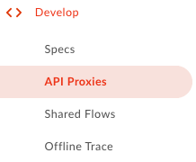
Click on ‘+Proxy'
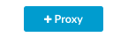
Select SOAPservice and click Next
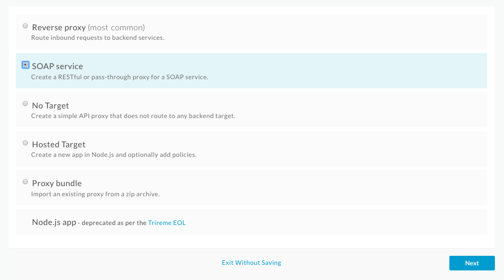
Select ‘Example URL' and pick the one for a delayed stock quote service from CDYNE:
https://ws.cdyne.com/delayedstockquote/delayedstockquote.asmx?WSDL
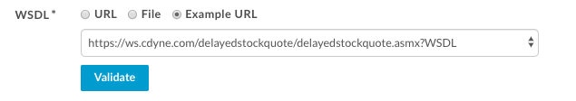
Click on Validate, then on Next.
In the next screen just leave all values as default and click on Next. You can see that the wizard is already identifying the options in the service and doing some conversion to Rest, for example, ‘GET /quote'
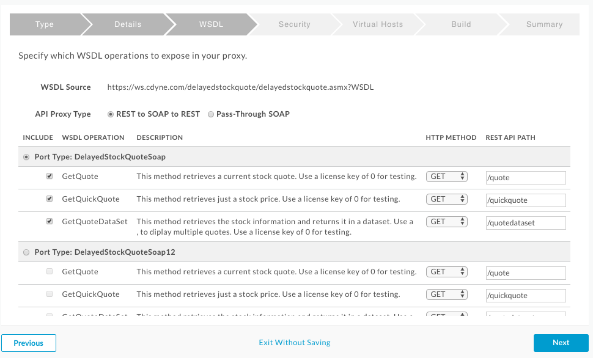
For Authorization, select Pass through, click on Next
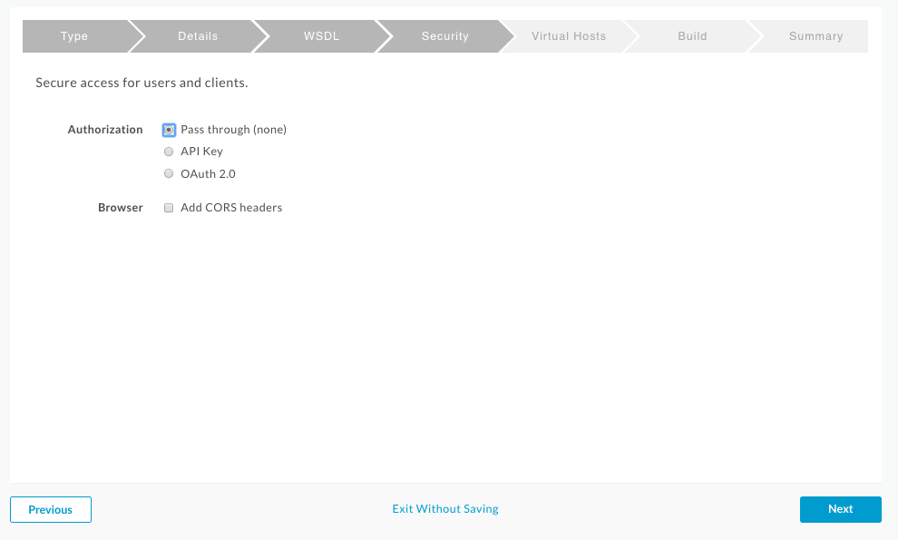
For the virtual hosts, deselect ‘default' and make sure ‘secure' is checked:
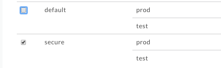
For the deployment option, only the test environment is needed:
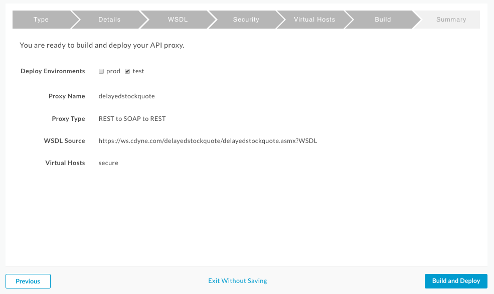
Click on ‘Build and Deploy'
After it is done, you should see a few check marks
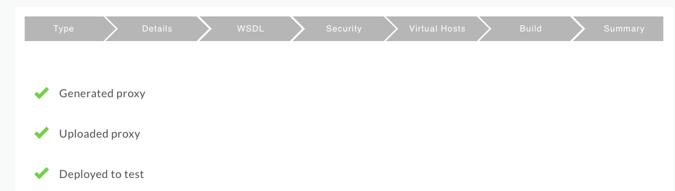
Click on the ‘View delayedstockquote proxy in the editor' at the bottom of the screen.
If you accidentally click on ‘Exit', you can always get back in the proxy from the list of API Proxies.
Inside the proxy, in the Overview tab, you can already see some details of the conversion done:
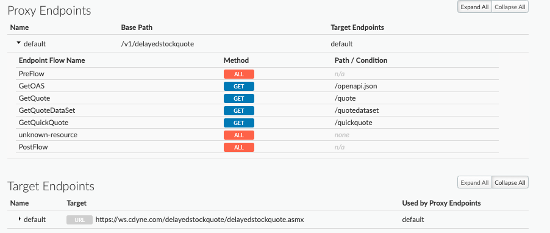
There are a few Verb/Paths configured while the backend is set to point to the original SOAP service. All this information came from the WSDL file used at the creation.
If you now go into the Develop tab and select the ‘GetQuote' flow, you should see the configurations created for it:
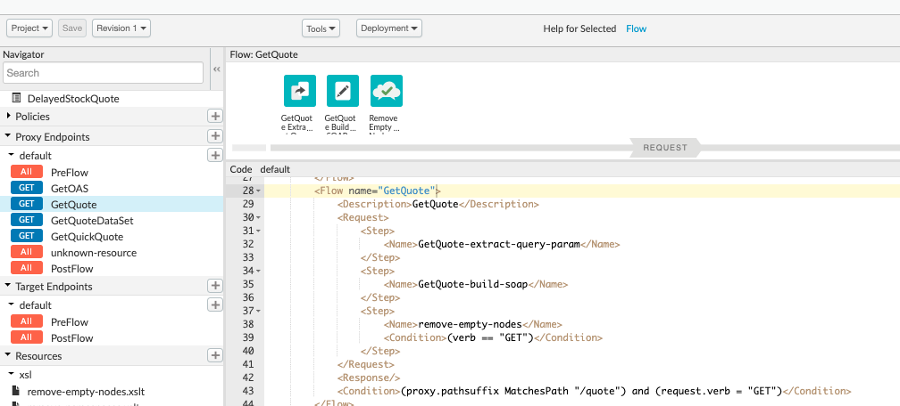
The first policy, ‘GetQuote Extract Query Param', shows us which incoming parameters are required for this operation, while the next policy, ‘GetQuote Build SOAP' shows us how the backend is expecting the operation to look and where the incoming parameters get plugged in.
Feel free to look around a bit more into the other operations as well, and you'll soon see the pattern.
The two required parameters are:
Switch now to the Trace tab and click on ‘Start Trace Session'.
Append the following to the URL:
/quote?StockSymbol=GOOG&LicenseKey=0Click on Send and you should see a ‘200' next to the button, with more details below.
If you select the last circle on the Transaction Map on the top line (Request)
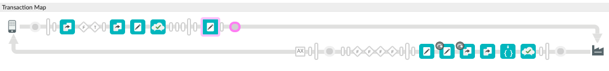
You'll see at the bottom, the details of the request sent to the target:
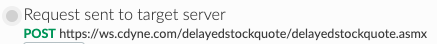
And a little more below (scroll down)
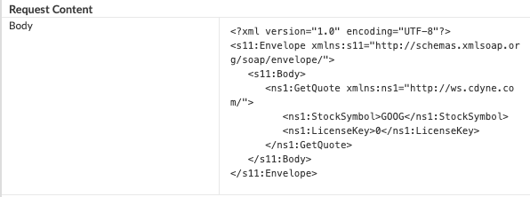
To see the response received by the target, select the rightmost circle in the bottom line in the Transaction Map:
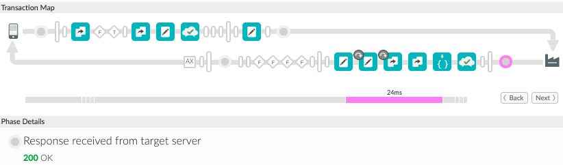
And scrolling down, shows:
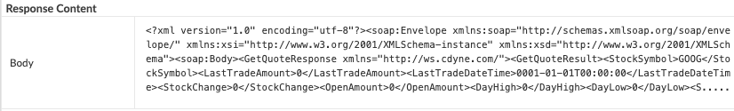
While the response sent to the client is the most left circle at the bottom line:
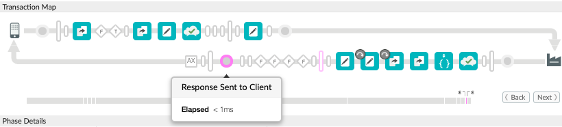
Which is already converted to JSON (the de-facto standard for REST APIs)
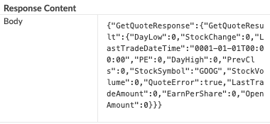
You now can use the SOAP to REST wizard to convert legacy services to REST APIs.
Make sure you read more on API design and use this as a starting point to build amazing APIs to legacy services without having to change them.